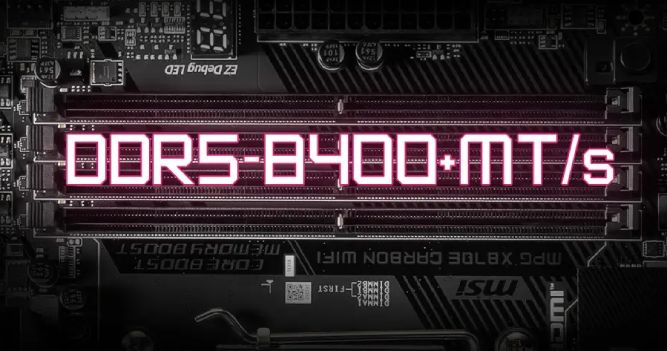

MSI X870E Motherboards: CUDIMM Support and Specifications
New details about MSI's X870E motherboards have recently surfaced. According to several company executives, the X870E motherboards will be released with support for the CUDIMM standard. In this article, we delve into more information about MSI motherboards.
Many manufacturers are looking to have their motherboards support the DDR5 CUDIMM standard, and AMD has successfully implemented this standard. MSI, as a leading company in this field, is planning to bring many products to the market featuring this technology.
MSI Motherboards with CUDIMM Support
The CUDIMM standard helps memory modules reach higher frequencies by dynamically adjusting voltage and frequency. Companies like Biwin, V-Color, and Asgard have already introduced their own CUDIMM memory with speeds up to 9600 MT/s.
In an exciting announcement, an MSI representative confirmed that the X870E motherboards will indeed support the CUDIMM standard. This technology will only be compatible with Ryzen 9000 and 8000 processors, and it appears that MSI will modify the memory slots on these motherboards to ensure compatibility with both the CUDIMM and the new CAMM 2 standards.
According to a report from Wccftech, while these motherboards won’t reach extremely high speeds like 10000 MT/s, users can still expect decent performance. As the CUDIMM standard becomes more prevalent, higher speeds may become available in the future.
Interestingly, Intel’s Arrow Lake-S processors will also support the CUDIMM standard to some extent. Additionally, AMD’s Zen 5 processors will be compatible with CUDIMM, setting the stage for an exciting competition between AMD and Intel. However, as of now, MSI is the only company that has confirmed CUDIMM support for its X870E motherboards.